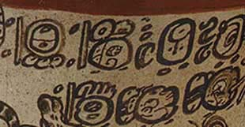
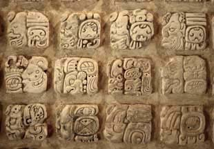

escritura logográfica y silábica

Los mayas desarrollaron no sólo un sistema de escritura logográfica (que corresponde a otras grandes tradiciones de escritura, como los jeroglíficos egipcios o las logografías chinas) sino también un silabario, es decir, un repertorio de símbolos que representaban todas las posibles combinaciones de consonantes y vocales en una sílaba, mediante lo cual, juntando los signos para diferentes sílabas, se podía escribir palabras completas (algo parecido a la función de katakana o hiragana en el sistema de escritura japonés). Los símbolos logográficos, en contraste, representan palabras enteras. Arriba, jeroglíficos hechos con una pluma en el borde de una vasija de cerámica y abajo, jeroglíficos tallados en estuco, del museo de Palenque. Para ejemplos de las dos clases de escritura, véase “Lecturas”.
